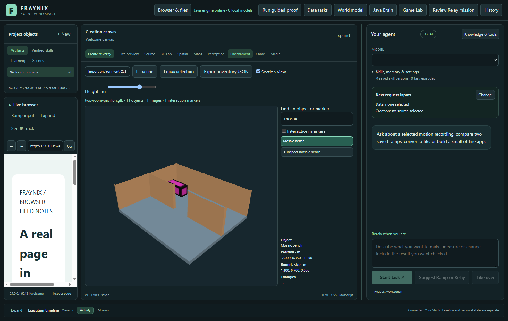
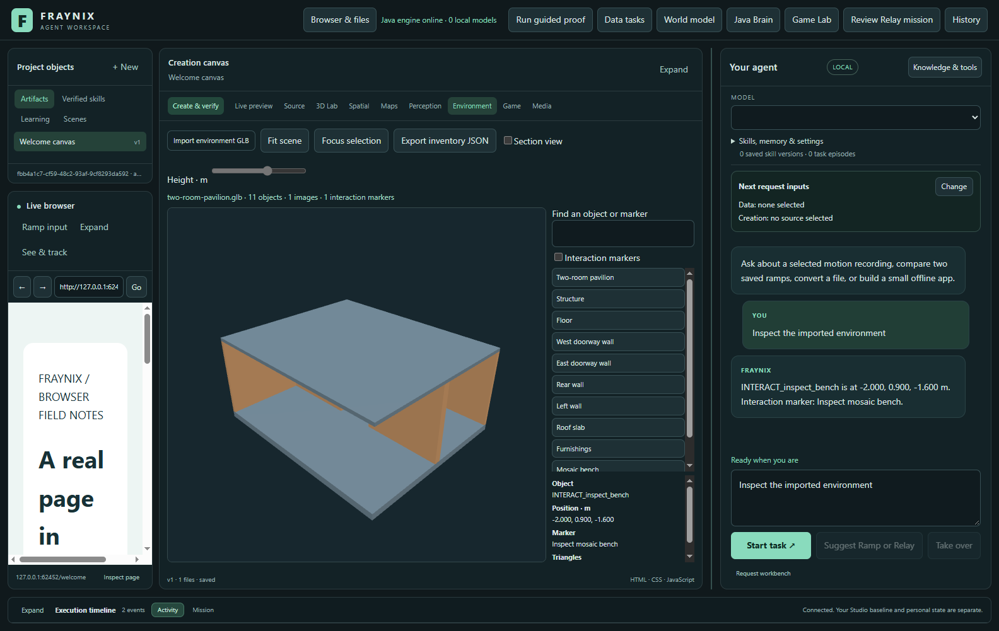

Open and inspect textured 3D environments
Load a Blender scene, inspect its source-backed geometry, and export a world-coordinate inventory.

Section view of the test pavilion with its room and furniture inventory

Offline chat reads the retained environment
System files
Open source